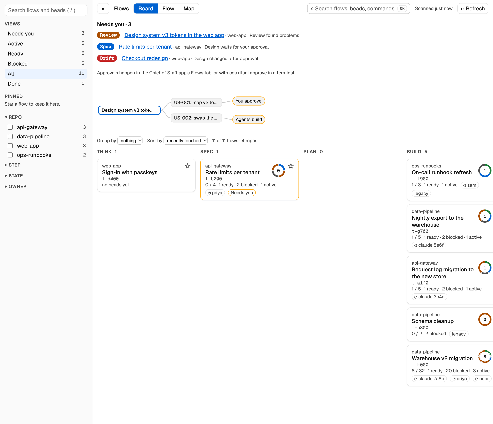
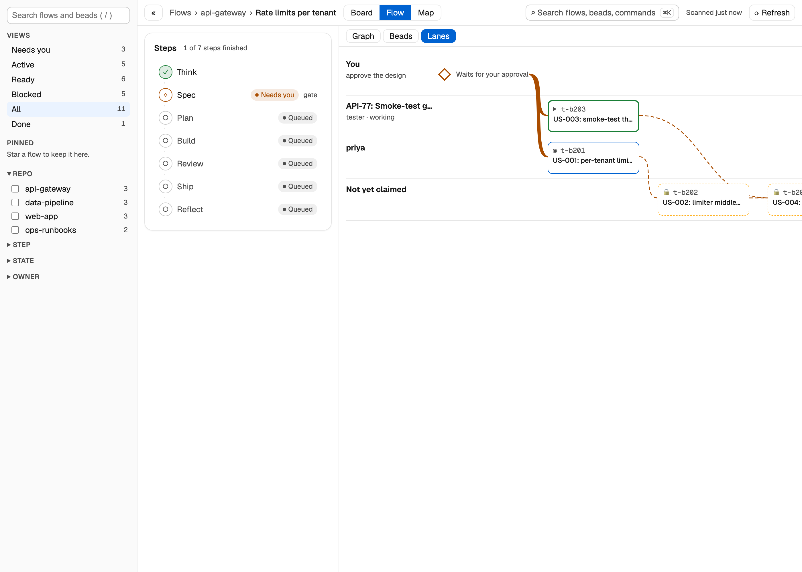
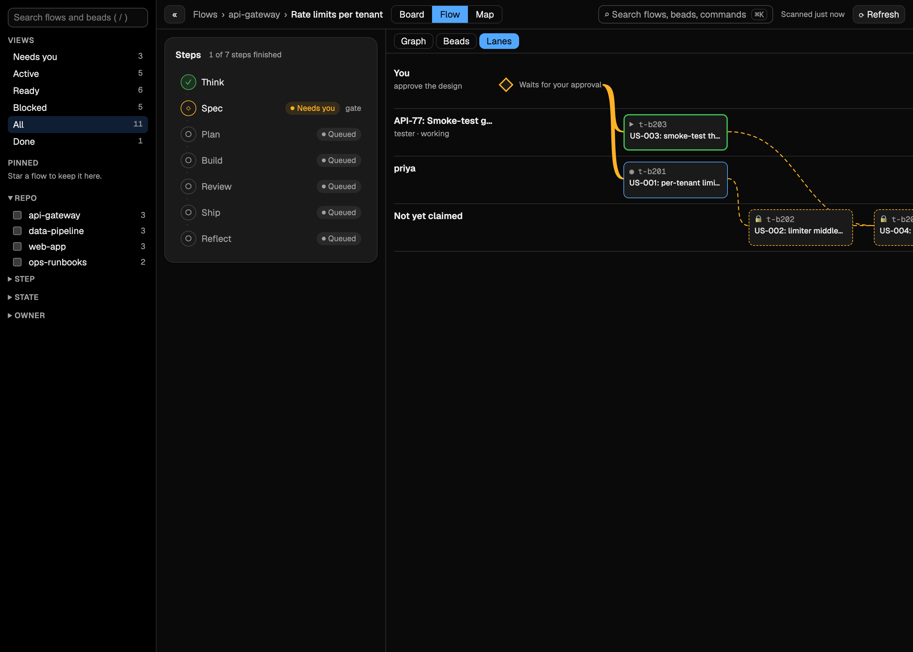
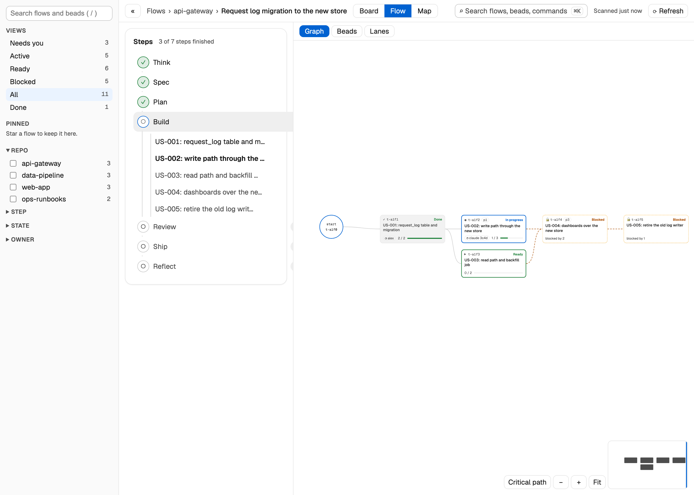
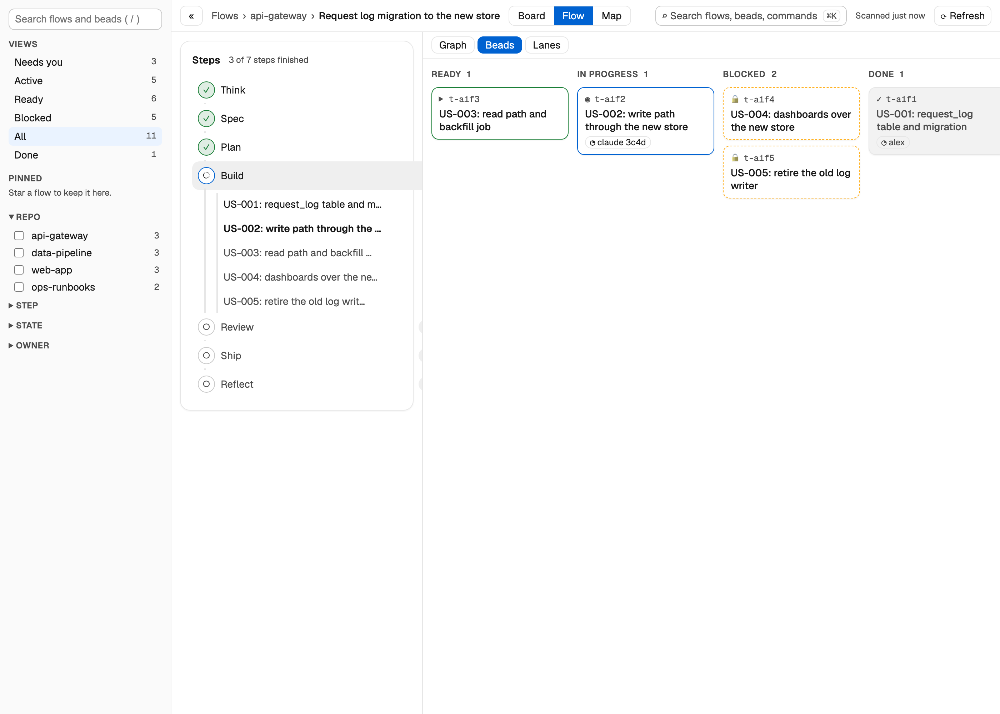
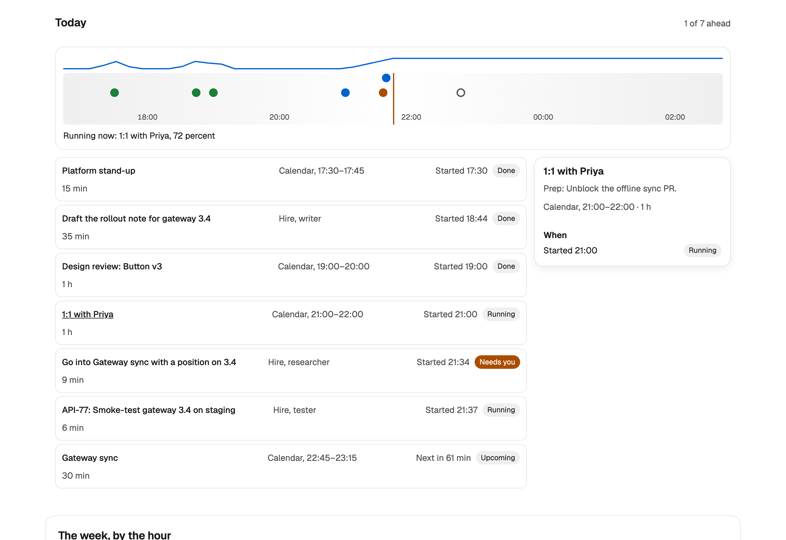
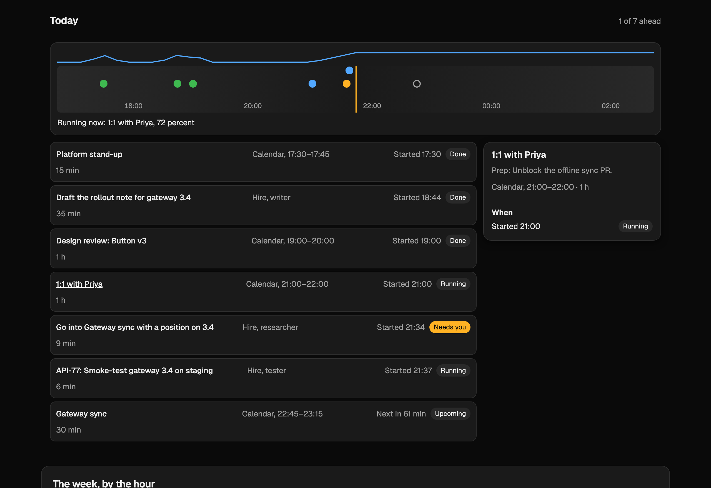

Flows and Today in motion: Flows shows who holds each bead, and Today shows the day around now
PR #61, branch feat/desktop-flows-today-motion, base 8f68a6a. Design: 2026-11-26-flows-today-motion-design.md (approved). Ritual epic t-e89af1. Components are ported from rust-v2 7ff3ec5.
The claim: a flow reads as owners, steps and states, and Today reads as hires at work around a now line
On Flows, a flow opens as lanes, one per hire or owner, with its beads in dependency columns and the gate breathing at Approve. A side column lists the ritual's steps in rv2-kit's StepProgressList; the step waiting on you is announced. Board cards carry a bead ring, and a Beads view glides cards between columns when a rescan moves them. On Today, the hero shows a pill for each hire at work and a loader while a brief runs. The hires inbox moves cards live as their state changes, without a reload. rv2-kit's AgentScheduleBoard shows today around now, and KPI values roll to the recorded figure. Every animation is off under reduced motion, and rendering writes nothing.
Before and after: the same demo home, two commits

8f68a6a. docs/assets/flows.png as committed at the base.
task screenshots on the demo home, 2026-11-27 UTC.
8f68a6a.
task screenshots, demo home.What a person sees
All images come from task screenshots on the synthetic demo home (/tmp/cos-demo), taken in headless Chrome on 2026-11-27 UTC. They show the report through cos dash and the window through apps/desktop/examples/preview.rs. Light is on the left and dark on the right.






document.getAnimations() is empty), not by images.Prove it yourself
- Build the demo home.
Pass:
task demo
demo home ready: /tmp/cos-demo. - Serve the report and Flows.
Pass:
COS_CN=/tmp/cos-demo/bin/cn target/debug/cos --home /tmp/cos-demo --projects /tmp/cos-demo/projects --no-open dash --port 8794
http://127.0.0.1:8794/flowsshows the scene and rings. The Rate limits flow shows Lanes, and Steps reads "Spec: Needs you" to a screen reader. - Run the e2e suites.
Pass:
task test-e2e
flows_page17 passed,kit_page21 passed. - Prove rendering writes nothing.
Pass: 2 passed.
cargo test --test read_only_render
- Run every gate.
Pass: exit 0, with no
task test
FAILEDline.
The render path no longer writes or signals
report::data used to call agents::list on every render. That call reconciles: it writes state.json, can kill a legacy process group, and ends runs. This PR replaces it with agents::snapshot, a pure read. tests/read_only_render.rs walks every file's path, length and mtime under the demo home, before and after rendering Today, scanning Flows and taking the snapshot. It asserts the two listings are equal. Before the fix it failed: the report wrote state.json, events, the ledger and lock files.
Traps that look like this change and are not
| Symptom | Cause | Tell |
|---|---|---|
| Flows says no design is waiting | The server was started without COS_CN | The board is empty too |
| The window's report or Flows frame stays blank in the preview | An old preview.rs used a relative base, which safeFrameSrc refuses (fixed here) | The console shows "frame refused" |
| The hires inbox reads "as last read" | No cos-hires message arrived within 10 s: the page is outside the window, or the follower is not running | It is served by cos dash |
| Nothing animates | Reduced motion is on in the OS | Everything is in its settled state |
What this proves that the tests cannot
The tests prove structure, states, keyboard behaviour, reduced motion and the absence of writes. The images show the ported components look like the rv2-kit gallery's, on real demo data, in both themes. The owner rejected the first, hand-drawn rail, and Steps and the schedule board were rebuilt from the gallery. Side-by-side shots of each against the gallery are kept in the build's scratchpad.
What I have NOT checked
- The installed Tauri app, opened and used. The window was seen only through
preview.rsin a browser. - The two prove-it hand-checks, listed in the PR body under "Verify by hand":
- a live
cos dashsession in light, dark and reduced motion, including a minute spent on another tab; - a desktop inbox card moving when a stand-in Herdr word changes.
- a live
- Motion by eye under reduced motion. The browser tool cannot emulate it; e2e covers it.
- More than three schedule markers within one 1.5rem target. They overlap again; no current data does this.
- Lanes past 12 columns. Only an 8-column, 32-bead flow was looked at.
- The 1,884 colour-contrast nodes axe could not decide. Nobody checked them by eye.